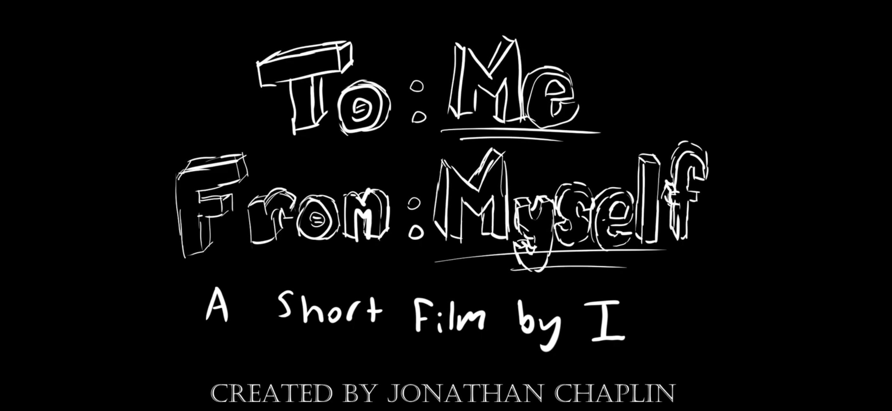
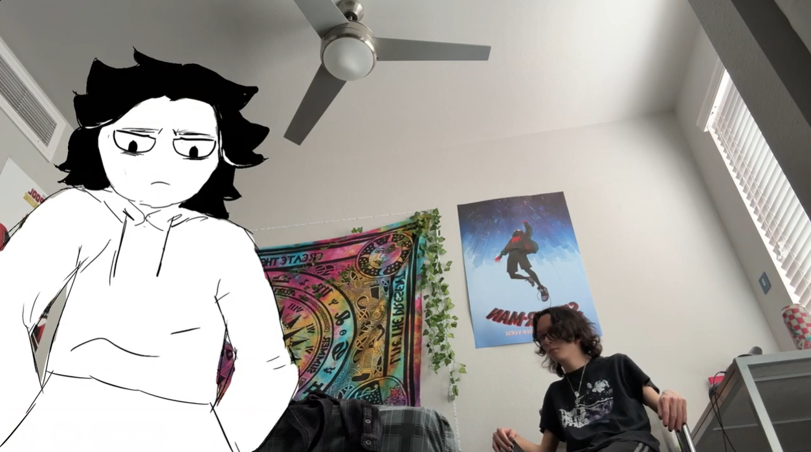

About Me
I'm an NAU sophomore student that is currently majoring in Immersive Media and Games with a minor in business.
Interested in graphic design, animation, and web development.
In my free time, I enjoy drawing, listening to music, and playing video games.
Education & Experience
| School | Diploma / Degree | Duration |
|---|---|---|
| Estrella Foothills High School | High School Diploma | 2020 - 2024 |
| Northern Arizona University (NAU) | Immersive Media and Games Major, Business Minor | 2024 - Present |
Skills
HTML
CSS
Python
C
Microsoft Office
Clip Studio
Adobe Programs
Projects
Portfolio Website
The current website you are on right now! :D
⠀⠀⠀⢠⠔⠚⠒⢦⠀⠀⠀⠀⠀⠀⠀⠀⠀⠀⠀⠀⠀⠀⠀⠀⠀ ⠀⠀⢠⠏⠀⠀⠀⣸⠀⠀⠀⠀⠀⠀⠀⠀⠀⠀⠀⠀⠀⠀⠀⠀⠀ ⠀⠀⢸⡀⠀⠀⠀⡇⠀⠀⢀⠀⣠⣄⠀⠀⠀⠀⠀⠀⠀⠀⠀⠀⠀ ⠀⠀⠀⢧⠀⠀⠀⢳⣾⣿⣿⣿⣿⣿⣶⣄⠀⠀⠀⠀⠀⢀⡀⠀⠀ ⠀⠀⠀⠀⠑⡶⠀⠀⠙⠛⠻⠿⣿⣿⣿⣿⠷⠶⠒⠚⠉⠉⠉⠓⡄ ⠀⠀⠀⠀⡼⠁⠀⠠⠀⠀⠀⠀⠀⠀⠀⠀⠀⠀⠀⠀⠀⠀⠀⠀⡇ ⠀⡴⠲⢤⠇⠀⠀⠀⠀⣆⡸⠂⠀⠀⠐⠀⠀⠀⢶⣤⣀⣀⡤⠞⠁ ⠀⢧⡀⠈⠀⠀⠀⠀⠀⠀⠀⠉⠁⠀⠀⠀⠀⠀⢈⡷⠒⢆⠀⠀⠀ ⠀⠀⢹⡏⠀⠀⠀⠀⠀⠀⠀⠀⠀⠀⠀⠀⠀⠀⠀⠀⣠⠏⠀⠀⠀ ⠀⠀⢸⠀⠀⠀⠀⠀⠀⠀⠀⠀⠀⠀⠀⠀⠀⠀⠀⡏⠁⠀⠀⠀⠀ ⢰⠒⠻⠀⠀⠀⠀⠀⠀⠀⠀⠀⠀⠀⠀⠀⠀⠀⠀⡇⠀⠀⠀⠀⠀ ⢹⡀⠀⠀⠀⠀⠀⠀⠀⠀⠀⠀⠀⠀⠀⠀⠀⠀⡼⠃⠀⠀⠀⠀⠀ ⠀⠙⠲⠞⠓⠢⢤⣄⣀⠀⠀⠀⠀⠀⠀⠀⠀⠈⣹⠀⠀⠀⠀⠀⠀ ⠀⠀⠀⠀⠀⠀⠀⠀⠈⠉⠉⠉⠉⠉⠛⠳⠤⠖⠃⠀⠀⠀⠀⠀⠀New Media Foundations Final
Created a multimedia project combining text, images, and audio resulting in a short animated story revolving around a personal journey of self-discovery.
 3D Design Fundamentals Project #2
Used cardboard and paper mache to create a 'Big Head' sculpture, an exaggerated headpiece designed to fit on a person's head.